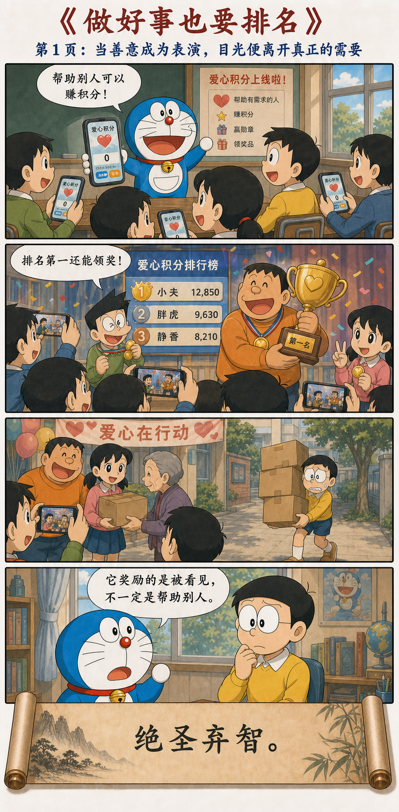
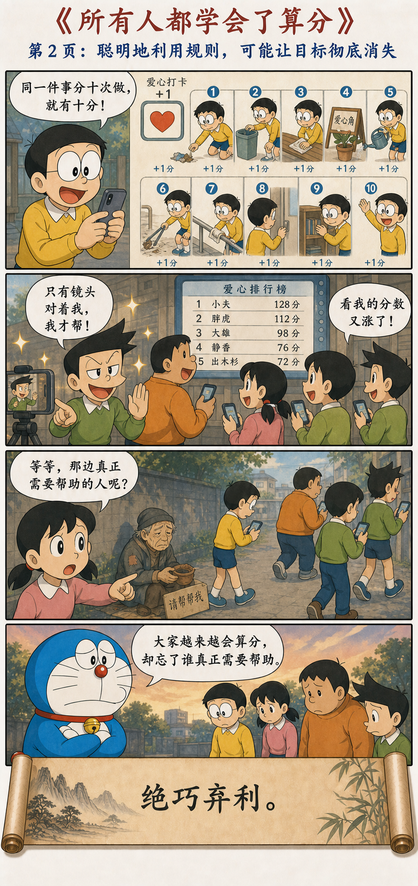
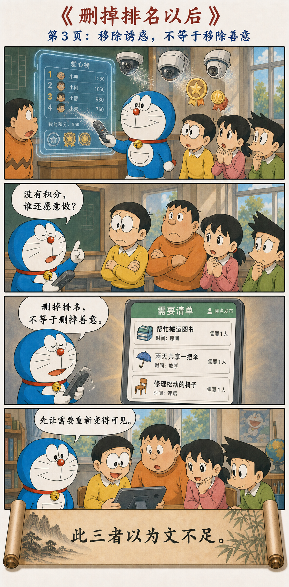
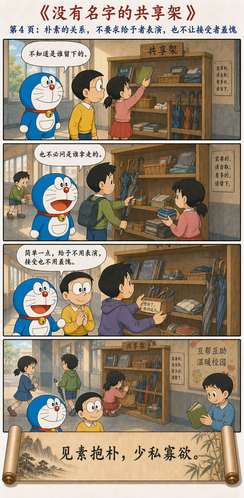

绝巧弃利，盗贼无有
绝圣弃智，民利百倍；绝仁弃义，民复孝慈；绝巧弃利，盗贼无有。此三者以为文不足，故令有所属：见素抱朴，少私寡欲。
去掉被包装的榜样、机巧与利益诱导
去掉被高高标举的圣智，百姓会得到更多真实利益；去掉外在表演的仁义，孝慈可以回到自然关系；去掉投机取巧和利益诱饵，盗贼也会失去生长的条件。
只讲这三个“去掉”还不够，还要让生活有所归属：看见未经装饰的本色，守住未被过度雕琢的质朴，减少自我中心的计算，减少被外界制造出来的欲望。
从爱心积分，到没有名字的共享架




“绝智”不是反知识，而是反对聪明劫持目标
如果把这章读成“不要学习、不要理性”，很快就会陷入新的愚昧。老子所要“绝”的，是被制度高高标举、用来制造等级和争夺的圣智，也是脱离真实需要、只剩技巧优越感的聪明。
爱心积分刚出现时，看起来是在鼓励善行；可一旦排名成为目标，人们便会拆分任务、寻找镜头、计算最高分。知识和技巧没有消失，只是从帮助他人转向了利用规则。
当“好事分数”可以被优化，好事本身就可能被遗忘
能够测量的东西容易获得注意，难以测量的需要则容易被忽略。镜头前递一次盒子可以计分，长期陪伴一个沮丧的人却不容易留下记录；于是前者越来越多，后者越来越少。
问题不只是有人“动机不纯”。当一套机制持续奖励可见性，每个人都会被训练成更在意被看见。这时劝大家无私，常常不如先删掉那张排行榜。
如果指标成为新的欲望，它就不再只是记录目标，而会重新塑造目标。
去掉外在装饰以后，还要把注意力还给真实需要
删除积分只是第一步。哆啦A梦保留了一张简单的匿名需要清单，让书需要搬、伞需要分享、椅子需要修这些具体事实重新进入视野。没有实际归属的“做个好人”，很容易再次变成抽象表演。
“见素抱朴”不是把生活变得粗糙，而是让形式服从用途：需要什么就写什么，能够提供什么就留下什么，不再给每一次给予附加身份、名声与比较。
共享架同时保护给予者与接受者
少私不是没有个人需要，寡欲也不是压抑所有愿望。它们是在减少那些必须通过比较、占有和展示才能满足的欲望，让人与物之间恢复更直接的关系。
简单，不等于拒绝制度与工具
共享架仍然需要维护，匿名清单也需要安全边界；复杂社会更不可能只靠自发善意运行。第十九章并不是取消一切制度，而是提醒制度不要成为新的欲望机器。
一个好工具应该帮助需要更清楚地出现、资源更顺畅地抵达，而不是让人们把大部分精力花在证明自己、争夺名次和设计表演上。
从聪明的表演，回到朴素的有用
第十九章不是要清空文明，而是要拿掉遮住真实关系的过度包装。好事不必成为勋章，善意不必变成比赛；形式越简单，谁需要什么、谁能够给予什么，反而越容易被看见。
没有姓名的帮助，也可以真正抵达一个人。